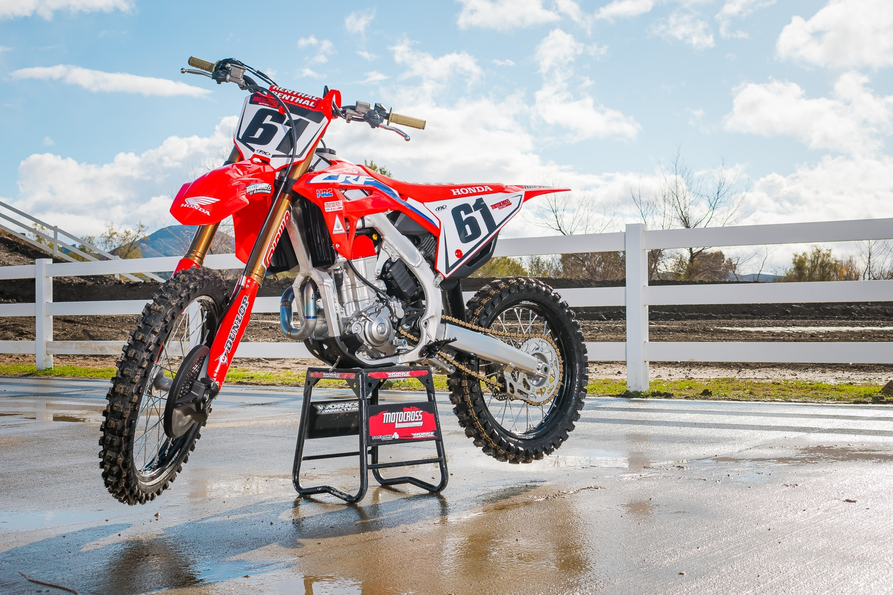
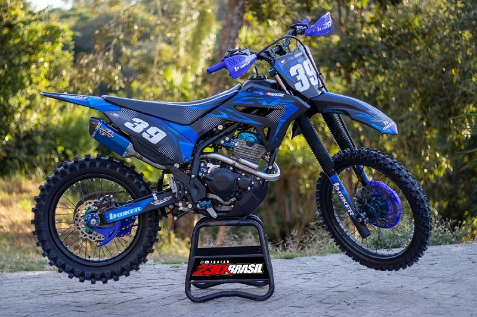

O que você quer aprender hoje?
Quantos anos precisa para fazer trilha

Modelos como a mini moto de trilha 125cc Pro Tork podem ser pilotados por crianças a partir de 5 anos. É uma mini moto de trilha a gasolina que pesa menos de 50 quilos. A mini moto de trilha da Pro Tork modelo TR 100F também é indicada para quem tem mais de 5 anos.
Quanto custa uma moto de trilha

O valor de uma moto de trilha pode variar bastante dependendo da marca, modelo, ano de fabricação e condição geral da moto. Algumas motos de trilha usadas podem custar cerca de R$ 10.000, enquanto outras mais avançadas e de alta performance podem custar mais de R$ 30.000.
Melhores motos
CRF230f

Tem um preço médio de R$15.000 tendo o design inspirado na tendência mundial da linha CRF, considerada porta de entrada para o mundo do motocross. Isso sem contar a sua leveza (pesa apenas 107 kg), partida elétrica e motor OHC, que fornece elevado torque em baixas rotações.
CRF250r importada

Sendo ela 0km tem preço médio de R$71.000 sendo uma moto importada e de alto nível para o povo mais avançado.
Precisa de CNH para pilotar uma moto de trilha?

Não precisa. Motocross é praticado por crianças, adolescentes, adultos e idosos. Todo mundo pode praticar e competir no motocross. Não é exigida CNH.
Benefícios de fazer trilha

Andar nas pistas e trilhas com uma moto off road oferece uma ótima maneira de fortalecer o corpo, melhorar sua capacidade de pensar rápido, aguça sua destreza e te mostra como aprender a competir de forma saudável.